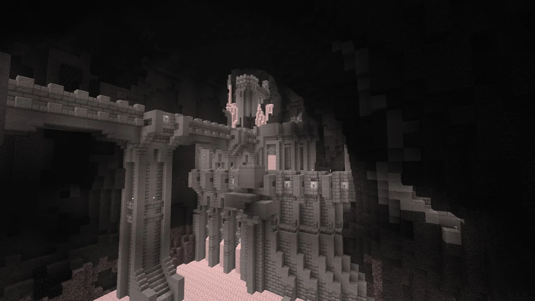
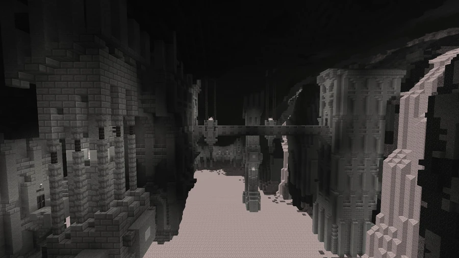
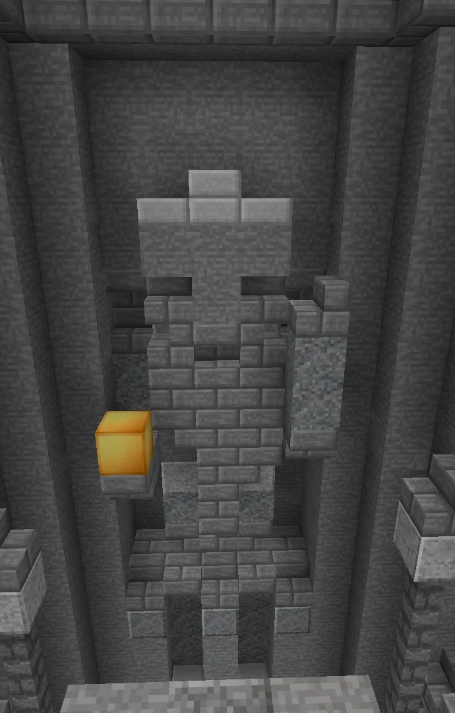

Dwarven Society
An ancient civilization associated with ruins deep in the mountains and the Arkenstone jewel. Its disappearance is explained by a tradition about breaching the mountain’s core.
Mountain ruins
The dwarven society is presented as one of Broville’s oldest civilizations. Its remains lie deep in the mountains, with a reference point at −360, 88, 3167. Its architecture is described as exceptionally durable, built from sturdy stone and sheltered in the map’s most remote depths.
The community description characterizes exploration as extremely dangerous, sometimes almost impossible. It says that few entered these forgotten lands and that most did not return. It also attributes the absence of objects from this civilization in the city museum to the site’s antiquity and inaccessibility; these claims belong to the tradition surrounding the site.



The Arkenstone and the disappearance
The legend singles out one object said to have survived the passage of time: the Arkenstone, which exists on the map as a named item. The same account says that the civilization vanished after breaching the mountain’s core. The existence of the jewel and structures does not by itself establish this explanation for the inhabitants’ disappearance.
Gallery






See also
Sources and references
- v11.4.4 maps, signs, books and items World records
- The dwarven society · Broville Wiki Community archive
Text adapted and expanded from The dwarven society (contributors and history, revision 5123). Adapted text is available under CC BY-SA 3.0.